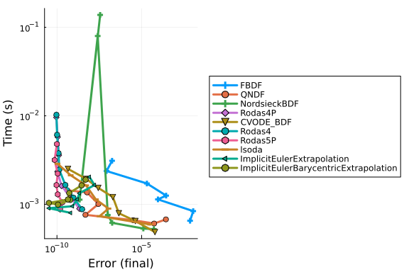

AstroChem Work-Precision Diagrams
using Catalyst
using SciMLLogging
using OrdinaryDiffEq
using OrdinaryDiffEqBDF, OrdinaryDiffEqExtrapolation, OrdinaryDiffEqFIRK, OrdinaryDiffEqRosenbrock, OrdinaryDiffEqSDIRK
using Plots
using Symbolics
using DiffEqDevTools
using Sundials, ODEInterface, ODEInterfaceDiffEq, LSODA
using RecursiveFactorizationWithout Temperature Dynamics
# Some basic astrochemistry constants:
# u_vec = [H2 O C O⁺ OH⁺ H H2O⁺ H3O⁺ E H2O OH C⁺ CO CO⁺ H⁺ HCO⁺ T]
# println(u_vec)
# @species
kboltzmann = 1.38064852e-16 # erg / K
pmass = 1.6726219e-24 # g
# dust2gas = 1e-2 # ratio
mu = 2.34
seconds_per_year = 3600 * 24 * 365
gamma_ad = 1.4
gnot = 1e1
# Simulation parameters:
number_density = 1e5
# dust2gas = 0.01
minimum_fractional_density = 1e-30 * number_density
# @register_symbolic get_heating(H, H2, E, tgas, ntot, dust2gas)
function get_heating(H, H2, E, tgas, ntot, dust2gas)
"""
get_heating(x, tgas, cr_rate, gnot)
Calculate the total heating rate based on various processes.
## Arguments
- `x`: Dict{String, Float64} — A dictionary containing the abundances of different species:
- `"H"`: Abundance of hydrogen
- `"H2"`: Abundance of molecular hydrogen
- `"E"`: Abundance of electrons
- `"dust2gas"`: Dust-to-gas ratio
- `tgas`: Float64 — Gas temperature
- `cr_rate`: Float64 — Cosmic ray ionization rate
- `gnot`: Float64 — Scaling factor for cosmic ray ionization rate
## Returns
- Float64 — Total heating rate considering cosmic ray ionization and photoelectric heating processes.
"""
rate_H2 = 5.68e-11 * gnot
heats = [
cosmic_ionisation_rate * (5.5e-12 * H + 2.5e-11 * H2),
get_photoelectric_heating(H, E, tgas, gnot, ntot, dust2gas),
6.4e-13 * rate_H2 * H2
]
return sum(heats)
end
# @register_symbolic get_photoelectric_heating(H, E, tgas, gnot, ntot, dust2gas)
function get_photoelectric_heating(H, E, tgas, gnot, ntot, dust2gas)
"""
get_photoelectric_heating(x, tgas, gnot)
Calculate the photoelectric heating rate due to dust grains.
## Arguments
- `x`: Dict{String, Float64} — A dictionary containing the abundances of different species:
- `"H"`: Abundance of hydrogen
- `"H2"`: Abundance of molecular hydrogen
- `"E"`: Abundance of electrons
- `tgas`: Float64 — Gas temperature
- `gnot`: Float64 — Scaling factor for cosmic ray ionization rate
## Returns
- Float64 — Photoelectric heating rate based on dust recombination and ionization processes.
"""
# ntot = sum(x)
bet = 0.735 * tgas^(-0.068)
psi = (E>0) * gnot * sqrt(tgas) / E
# grains recombination cooling
recomb_cool = 4.65e-30 * tgas^0.94 * psi^bet * E * H
eps = 4.9e-2 / (1 + 4e-3 * psi^0.73) + 3.7e-2 * (tgas * 1e-4)^0.7 / (1 + 2e-4 * psi)
# net photoelectric heating
return (1.3e-24 * eps * gnot * ntot - recomb_cool) * dust2gas
end
# @register_symbolic get_cooling(H, H2, O, E, tgas)
function get_cooling(H, H2, O, E, tgas)
"""
get_cooling(x, tgas)
Calculate the total cooling rate based on various processes.
## Arguments
- `x`: Dict{String, Float64} — A dictionary containing the abundances of different species:
- `"H"`: Abundance of hydrogen
- `"E"`: Abundance of electrons
- `"O"`: Abundance of oxygen
- `"H2"`: Abundance of molecular hydrogen
- `tgas`: Float64 — Gas temperature
## Returns
- Float64 — Total cooling rate considering Lyman-alpha, OI 630nm, and H2 cooling processes.
"""
cool = 7.3e-19 * H * E * exp(-118400.0 / tgas) # Ly-alpha
cool += 1.8e-24 * O * E * exp(-22800 / tgas) # OI 630nm
cool += cooling_H2(H, H2, tgas) # H2 cooling by dissacoiation and recombination
return cool
end
@register_symbolic cooling_H2(H, H2, temp)
function cooling_H2(H, H2, temp)
"""
cooling_H2(x, temp)
Calculate the cooling rate for molecular hydrogen (H2) at a given temperature.
## Arguments
- `x`: Dict{String, Float64} — A dictionary containing the abundances of different species:
- `"H"`: Abundance of hydrogen
- `"H2"`: Abundance of molecular hydrogen
- `temp`: Float64 — Gas temperature
## Returns
- Float64 — Cooling rate due to molecular hydrogen (H2) dissociation and recombination processes.
"""
t3 = temp * 1e-3 # (T/1000)
logt3 = log10(t3)
logt32 = logt3 * logt3
logt33 = logt32 * logt3
logt34 = logt33 * logt3
logt35 = logt34 * logt3
logt36 = logt35 * logt3
logt37 = logt36 * logt3
logt38 = logt37 * logt3
if temp < 2e3
HDLR = (9.5e-22 * t3^3.76) / (1.0 + 0.12 * t3^2.1) * exp(-((0.13 / t3)^3)) +
3.0e-24 * exp(-0.51 / t3)
HDLV = 6.7e-19 * exp(-5.86 / t3) + 1.6e-18 * exp(-11.7 / t3)
HDL = HDLR + HDLV
elseif 2e3 <= temp <= 1e4
HDL = 1e1^(
-2.0584225e1
+
5.0194035 * logt3
-
1.5738805 * logt32
-
4.7155769 * logt33
+ 2.4714161 * logt34
+ 5.4710750 * logt35
-
3.9467356 * logt36
-
2.2148338 * logt37
+
1.8161874 * logt38
)
else
HDL = 5.531333679406485e-19
end
if temp <= 1e2
f = 1e1^(
-16.818342e0
+ 3.7383713e1 * logt3
+ 5.8145166e1 * logt32
+ 4.8656103e1 * logt33
+ 2.0159831e1 * logt34
+ 3.8479610e0 * logt35
)
elseif 1e2 < temp <= 1e3
f = 1e1^(
-2.4311209e1
+
3.5692468e0 * logt3
-
1.1332860e1 * logt32
-
2.7850082e1 * logt33
-
2.1328264e1 * logt34
-
4.2519023e0 * logt35
)
elseif 1e3 < temp <= 6e3
f = 1e1^(
-2.4311209e1
+
4.6450521e0 * logt3
-
3.7209846e0 * logt32
+
5.9369081e0 * logt33
-
5.5108049e0 * logt34
+
1.5538288e0 * logt35
)
else
f = 1.862314467912518e-22
end
LDL = f * H
if LDL * HDL == 0.0
return 0.0
end
cool = H2 / (1.0 / HDL + 1.0 / LDL)
return cool
end
function get_heating_cooling(
T, H2, O, C, O⁺, OH⁺, H, H2O⁺, H3O⁺, E, H2O, OH, C⁺, CO, CO⁺, H⁺, HCO⁺, dust2gas)
ntot = get_ntot(H2, O, C, O⁺, OH⁺, H, H2O⁺, H3O⁺, E, H2O, OH, C⁺, CO, CO⁺, H⁺, HCO⁺)
return (gamma_ad - 1e0) *
(get_heating(H, H2, E, T, ntot, dust2gas) - get_cooling(H, H2, O, E, T)) /
kboltzmann / ntot
end
function get_ntot(H2, O, C, O⁺, OH⁺, H, H2O⁺, H3O⁺, E, H2O, OH, C⁺, CO, CO⁺, H⁺, HCO⁺)
return sum([H2 O C O⁺ OH⁺ H H2O⁺ H3O⁺ E H2O OH C⁺ CO CO⁺ H⁺ HCO⁺])
end
ka_reaction(Tgas, α = 1.0, β = 1.0, γ = 0.0) = α*(Tgas/300)^β*exp(−γ / Tgas)
# CONTINUE HERE
# Try this: https://docs.sciml.ai/Catalyst/stable/catalyst_functionality/constraint_equations/#Coupling-ODE-constraints-via-directly-building-a-ReactionSystem
@independent_variables t
@variables T(t) = 100.0 # Define the variables before the species!
@species H2(t) O(t) C(t) O⁺(t) OH⁺(t) H(t) H2O⁺(t) H3O⁺(t) E(t) H2O(t) OH(t) C⁺(t) CO(t) CO⁺(t) H⁺(t) HCO⁺(t)
@parameters cosmic_ionisation_rate radiation_field dust2gas
D = Differential(t)
reaction_equations = [
(@reaction 1.6e-9, $O⁺ + $H2 --> $OH⁺ + $H),
(@reaction 1e-9, $OH⁺ + $H2 --> $H2O⁺ + $H),
(@reaction 6.1e-10, $H2O⁺ + $H2 --> $H3O⁺ + $H),
(@reaction ka_reaction(T, 1.1e-7, -1/2), $H3O⁺ + $E --> $H2O + $H),
(@reaction ka_reaction(T, 8.6e-8, -1/2), $H2O⁺ + $E --> $OH + $H),
(@reaction ka_reaction(T, 3.9e-8, -1/2), $H2O⁺ + $E --> $O + $H2),
(@reaction ka_reaction(T, 6.3e-9, -0.48), $OH⁺ + $E --> $O + $H),
(@reaction ka_reaction(T, 3.4e-12, -0.63), $O⁺ + $E --> $O),
(@reaction 2.8 * cosmic_ionisation_rate, $O --> $O⁺ + $E),
(@reaction 2.62 * cosmic_ionisation_rate, $C --> $C⁺ + $E),
(@reaction 5.0 * cosmic_ionisation_rate, $CO --> $C + $O),
(@reaction ka_reaction(T, 4.4e-12, -0.61), $C⁺ + $E --> $C),
(@reaction ka_reaction(T, 1.15e-10, -0.339), $C⁺ + $OH --> CO + $H),
(@reaction 9.15e-10 * (0.62 + 0.4767 * 5.5 * sqrt(300 / T)), $C⁺ + $OH --> $CO⁺ + $H),
(@reaction 4e-10, $CO⁺ + $H --> $CO + $H⁺),
(@reaction 7.28e-10, $CO⁺ + $H2 --> $HCO⁺ + $H),
(@reaction ka_reaction(T, 2.8e-7, -0.69), $HCO⁺ + $E --> $CO + $H),
(@reaction ka_reaction(T, 3.5e-12, -0.7), $H⁺ + $E --> $H),
(@reaction 2.121e-17 * dust2gas / 1e-2, $H + $H --> $H2),
(@reaction 1e-1 * cosmic_ionisation_rate, $H2 --> $H + $H),
(@reaction 3.39e-10 * radiation_field, $C --> $C⁺ + $E),
(@reaction 2.43e-10 * radiation_field, $CO --> $C + $O),
(@reaction 7.72e-10 * radiation_field, $H2O --> $OH + $H) # (D(T) ~ get_heating_cooling(T, H2, O, C, O⁺, OH⁺, H, H2O⁺, H3O⁺, E, H2O, OH, C⁺, CO, CO⁺, H⁺, HCO⁺, dust2gas))
]
@named system = ReactionSystem(reaction_equations, t)
u0 = [:H2 => number_density, :O => number_density*2e-4, :C => number_density*1e-4,
:O⁺=>minimum_fractional_density, :OH⁺=>minimum_fractional_density,
:H => minimum_fractional_density, :H2O⁺ => minimum_fractional_density,
:H3O⁺=>minimum_fractional_density, :E=>minimum_fractional_density,
:H2O=>minimum_fractional_density, :OH=>minimum_fractional_density,
:C⁺=>minimum_fractional_density, :CO=>minimum_fractional_density,
:CO⁺=>minimum_fractional_density, :H⁺=>minimum_fractional_density,
:HCO⁺ => minimum_fractional_density, :T => 100.0]
tspan = (0.0, 1e6*seconds_per_year)
params = [dust2gas => 0.01, radiation_field => 1e-1, cosmic_ionisation_rate => 1e-17]
println("Attempting to solve the ODE...")
sys = ode_model(complete(system))
# oprob = ODEProblemExpr(sys, [], tspan, params)
ssys = structural_simplify(sys)Attempting to solve the ODE...
Model system:
Equations (16):
16 standard: see equations(system)
Unknowns (16): see unknowns(system)
O⁺(t)
H2(t)
OH⁺(t)
H(t)
⋮
Parameters (4): see parameters(system)
T
cosmic_ionisation_rate
dust2gas
radiation_fieldoprob = ODEProblem(ssys, merge(Dict{Any, Any}(u0), Dict{Any, Any}(params)), tspan)
println("ODEProblem created successfully.")
sol = solve(oprob, Rodas5()) # Rodas5()) # Tsit5()
# Generate a tight-tolerance reference solution
refsol = solve(oprob, Rodas5P(), abstol = 1e-14, reltol = 1e-14)ODEProblem created successfully.
retcode: Success
Interpolation: specialized 4th (Rodas6P = 5th) order "free" stiffness-aware
interpolation
t: 971-element Vector{Float64}:
0.0
0.06082607907396814
1.2538157290785135
13.183712229123966
101.77765841511946
619.6337095951175
2664.0285003231884
5808.753793560587
9647.368391925425
14759.542849063164
⋮
2.059154919876833e13
2.197302558540446e13
2.338634685332286e13
2.482460181094649e13
2.628657428251865e13
2.776259583903611e13
2.928620279608695e13
3.0823373989821812e13
3.1536e13
u: 971-element Vector{Vector{Float64}}:
[1.0e-25, 100000.0, 1.0e-25, 1.0e-25, 1.0e-25, 1.0e-25, 1.0e-25, 1.0e-25,
1.0e-25, 20.0, 10.0, 1.0e-25, 1.0e-25, 1.0e-25, 1.0e-25, 1.0e-25]
[3.4062438630386017e-17, 100000.0, 1.658506995116365e-22, 1.21652159806449
98e-14, 1.0033630285797331e-25, 1.0000037135125647e-25, 2.0620090805091067e
-11, 9.999999999953043e-26, 1.0000000000046958e-25, 20.0, 9.99999999997938,
2.06200567424868e-11, 9.99999999998522e-26, 9.999955718712477e-26, 1.0e-25
, 1.0000044281287524e-25]
[7.020663850793171e-16, 100000.0, 7.04204614270862e-20, 2.5076321624205177
e-13, 3.0431671276365665e-24, 1.0006392488780413e-25, 4.25044562785115e-10,
9.999999999032054e-26, 1.0000000000967951e-25, 19.999999999999996, 9.99999
9999574957, 4.250438606483079e-10, 9.999999999695323e-26, 9.999087263806135
e-26, 1.0e-25, 1.0000912736193864e-25]
[7.375097620583222e-15, 100000.0, 7.777808936615606e-18, 2.636750230472412
6e-12, 3.418402205901515e-21, 7.874810324164259e-25, 4.469289281685813e-9,
9.999999989822363e-26, 1.0000000010777992e-25, 19.999999999999993, 9.999999
995530718, 4.46928189880694e-9, 9.999999996796526e-26, 9.990406861857091e-2
6, 1.0e-25, 1.0009593138142733e-25]
[5.653392813455609e-14, 100000.0, 4.599965551264545e-16, 2.035599481005278
e-11, 1.5615953555166292e-18, 2.4278289793467666e-21, 3.450270980443913e-8,
9.99999994909976e-26, 1.0000016435105337e-25, 19.999999999999943, 9.999999
965497347, 3.450265280895059e-8, 9.999999975278522e-26, 9.926179685018278e-
26, 1.0e-25, 1.0073820314971262e-25]
[3.303487218020619e-13, 99999.99999999996, 1.6304846374485057e-14, 1.23943
7326103723e-10, 3.380826178467006e-16, 3.2265792626927646e-18, 2.1005633468
547995e-7, 1.0001360346171529e-25, 1.0132098046345741e-25, 19.9999999999996
55, 9.999999789944013, 2.100559876906013e-7, 9.999999849829182e-26, 9.55892
9644625345e-26, 9.999999999999997e-26, 1.0441070354977355e-25]
[1.2146517696565777e-12, 99999.99999999975, 2.5338086335458003e-13, 5.3310
76964453534e-10, 2.2854464151033873e-14, 9.688630148951168e-16, 9.031078106
609437e-7, 1.762272047407728e-25, 1.7948919363190303e-24, 19.99999999999850
8, 9.999999096893683, 9.031063188049707e-7, 9.999999360702743e-26, 8.237062
751827235e-26, 9.999999999999913e-26, 1.1762937240391702e-25]
[2.1182339774625214e-12, 99999.99999999943, 9.308764089516043e-13, 1.16310
72618961456e-9, 1.8574843881518786e-13, 1.804329902717451e-14, 1.9691721169
312786e-6, 7.002539774039498e-24, 6.84106716421878e-23, 19.999999999996742,
9.99999803083114, 1.9691688640291505e-6, 9.99999863281453e-26, 6.551590370
964002e-26, 9.999999999999579e-26, 1.3448409640491016e-25]
[2.7523466012418333e-12, 99999.99999999905, 1.9028958136631572e-12, 1.9329
803921166704e-9, 6.380337354201996e-13, 1.0925014785757614e-13, 3.270465280
203764e-6, 1.1914941477293897e-22, 6.79982795788086e-22, 19.999999999994593
, 9.999996729540127, 3.2704598776774505e-6, 9.999997839354608e-26, 4.954305
331498963e-26, 9.999999999998833e-26, 1.5045696096013292e-25]
[3.170033084457648e-12, 99999.99999999854, 3.0667412783230837e-12, 2.95947
98950146132e-9, 1.581124972930939e-12, 4.4744465170487116e-13, 5.0034959064
307415e-6, 1.1888933895022125e-21, 4.20060301390201e-21, 19.99999999999173,
9.999994996512365, 5.003487641086763e-6, 9.999997571270549e-26, 3.41472291
77517583e-26, 9.999999999997257e-26, 1.658530018238108e-25]
⋮
[3.5000676667239367e-12, 99997.89674703019, 5.5973538097688176e-12, 4.2064
91642296905, 9.028269677430033e-12, 6.270274613491162e-10, 4.60983466683249
25, 7.133586368321887e-6, 2.4710709791921323e-8, 19.99996992270233, 5.39053
3612401937, 4.609443469242402, 2.2918152759396397e-5, 7.388755787056146e-12
, 3.5662154501122506e-10, 1.9527044265344143e-10]
[3.500072598934487e-12, 99997.75583252158, 5.597361683353563e-12, 4.488320
6594919, 9.028281634335875e-12, 6.270250871646567e-10, 4.6098517307567946,
7.133585763454087e-6, 2.4710758409772803e-8, 19.99996992270353, 5.390542809
977416, 4.609434271667534, 2.2918152119992858e-5, 7.388754551175432e-12, 3.
805466797116966e-10, 1.9526941200534634e-10]
[3.5000776435034164e-12, 99997.61170831628, 5.597369736299911e-12, 4.77656
9070052071, 9.028293863471739e-12, 6.270226582707733e-10, 4.609869188051617
, 7.133585144686613e-6, 2.4710808148447213e-8, 19.999969922704757, 5.390552
219544414, 4.609424862101198, 2.291815146589588e-5, 7.388753287102977e-12,
4.050165885470557e-10, 1.952683576895658e-10]
[3.500082775592372e-12, 99997.46508407507, 5.59737792895656e-12, 5.0698175
52455804, 9.028306304604625e-12, 6.270201865462538e-10, 4.6098869533515865,
7.133584515050911e-6, 2.4710858764731163e-8, 19.999969922706004, 5.3905617
95088247, 4.609415286558033, 2.2918150800309963e-5, 7.388752001057815e-12,
4.299107717359551e-10, 1.9526728487270744e-10]
[3.500087990692575e-12, 99997.31608863549, 5.5973862541255275e-12, 5.36780
8431601343, 9.028318946785162e-12, 6.270176740824488e-10, 4.609905011635832
, 7.133583875085017e-6, 2.4710910215833924e-8, 19.99996992270727, 5.3905715
28510615, 4.609405553136359, 2.2918150123803874e-5, 7.388750694164807e-12,
4.552073452714002e-10, 1.952661944727692e-10]
[3.5000932541549914e-12, 99997.16571193741, 5.5973946564942e-12, 5.6685618
27741237, 9.028331706000715e-12, 6.2701513749607e-10, 4.609923243480929, 7.
1335832290265424e-6, 2.4710962161504162e-8, 19.99996992270855, 5.3905813554
40626, 4.609395726207004, 2.2918149440857156e-5, 7.388749375102192e-12, 4.8
07382287022925e-10, 1.9526509371105965e-10]
[3.500098685354161e-12, 99997.01054348784, 5.5974033266265916e-12, 5.97889
8726815079, 9.028344871603852e-12, 6.270125191556455e-10, 4.609942063129705
, 7.133582562203706e-6, 2.4711015781998846e-8, 19.99996992270987, 5.3905914
99151794, 4.609385582496578, 2.2918148735960332e-5, 7.388748013947487e-12,
5.070824411865289e-10, 1.9526395759125532e-10]
[3.5001041627876112e-12, 99996.85405462037, 5.597412070560911e-12, 6.29187
6461710598, 9.028358149038246e-12, 6.270098775287304e-10, 4.609961050353303
, 7.133581889513791e-6, 2.4711069880020696e-8, 19.999969922711198, 5.390601
733139812, 4.609375348509258, 2.291814802486121e-5, 7.388746641144655e-12,
5.336506133281341e-10, 1.9526281149672742e-10]
[3.500106701349823e-12, 99996.78152871577, 5.597416123008599e-12, 6.436928
270871345, 9.028364302489354e-12, 6.2700865288998e-10, 4.609969852758991, 7
.1335815776823225e-6, 2.4711094959688186e-8, 19.999969922711816, 5.39060647
7562884, 4.6093706040865206, 2.291814769522478e-5, 7.388746004886005e-12, 5
.459637516310586e-10, 1.9526228022173735e-10]abstols = 1.0 ./ 10.0 .^ (7:13)
reltols = 1.0 ./ 10.0 .^ (4:10)
setups = [
Dict(:alg=>FBDF()),
Dict(:alg=>QNDF()),
Dict(:alg=>NordsieckBDF()),
Dict(:alg=>Rodas4P()),
Dict(:alg=>CVODE_BDF()),
#Dict(:alg=>ddebdf()),
Dict(:alg=>Rodas4()),
Dict(:alg=>Rodas5P()),
#Dict(:alg=>rodas()),
#Dict(:alg=>radau()),
Dict(:alg=>lsoda()),
#Dict(:alg=>ImplicitEulerExtrapolation(min_order = 5, init_order = 3,threading = OrdinaryDiffEqCore.PolyesterThreads())),
Dict(:alg=>ImplicitEulerExtrapolation(min_order = 5, init_order = 3, threading = false)),
#Dict(:alg=>ImplicitEulerBarycentricExtrapolation(min_order = 5, threading = OrdinaryDiffEqCore.PolyesterThreads())),
Dict(:alg=>ImplicitEulerBarycentricExtrapolation(min_order = 5, threading = false))
]
wp = WorkPrecisionSet(oprob, abstols, reltols, setups; verbose = SciMLLogging.None(),
save_everystep = false, appxsol = refsol, maxiters = Int(1e5), numruns = 10)
plot(wp)
With Temperature Dynamics
@variables T(t) = 100.0
D = Differential(t)
# Interpolate T-dependent rates so @reaction does not also treat T as a parameter.
k_H3O_E = ka_reaction(T, 1.1e-7, -1/2)
k_H2O_E_OH = ka_reaction(T, 8.6e-8, -1/2)
k_H2O_E_O = ka_reaction(T, 3.9e-8, -1/2)
k_OH_E = ka_reaction(T, 6.3e-9, -0.48)
k_O_E = ka_reaction(T, 3.4e-12, -0.63)
k_Cp_E = ka_reaction(T, 4.4e-12, -0.61)
k_Cp_OH_CO = ka_reaction(T, 1.15e-10, -0.339)
k_Cp_OH_COp = 9.15e-10 * (0.62 + 0.4767 * 5.5 * sqrt(300 / T))
k_HCO_E = ka_reaction(T, 2.8e-7, -0.69)
k_Hp_E = ka_reaction(T, 3.5e-12, -0.7)
reaction_equations = [
(@reaction 1.6e-9, $O⁺ + $H2 --> $OH⁺ + $H),
(@reaction 1e-9, $OH⁺ + $H2 --> $H2O⁺ + $H),
(@reaction 6.1e-10, $H2O⁺ + $H2 --> $H3O⁺ + $H),
(@reaction $k_H3O_E, $H3O⁺ + $E --> $H2O + $H),
(@reaction $k_H2O_E_OH, $H2O⁺ + $E --> $OH + $H),
(@reaction $k_H2O_E_O, $H2O⁺ + $E --> $O + $H2),
(@reaction $k_OH_E, $OH⁺ + $E --> $O + $H),
(@reaction $k_O_E, $O⁺ + $E --> $O),
(@reaction 2.8 * cosmic_ionisation_rate, $O --> $O⁺ + $E),
(@reaction 2.62 * cosmic_ionisation_rate, $C --> $C⁺ + $E),
(@reaction 5.0 * cosmic_ionisation_rate, $CO --> $C + $O),
(@reaction $k_Cp_E, $C⁺ + $E --> $C),
(@reaction $k_Cp_OH_CO, $C⁺ + $OH --> CO + $H),
(@reaction $k_Cp_OH_COp, $C⁺ + $OH --> $CO⁺ + $H),
(@reaction 4e-10, $CO⁺ + $H --> $CO + $H⁺),
(@reaction 7.28e-10, $CO⁺ + $H2 --> $HCO⁺ + $H),
(@reaction $k_HCO_E, $HCO⁺ + $E --> $CO + $H),
(@reaction $k_Hp_E, $H⁺ + $E --> $H),
(@reaction 2.121e-17 * dust2gas / 1e-2, $H + $H --> $H2),
(@reaction 1e-1 * cosmic_ionisation_rate, $H2 --> $H + $H),
(@reaction 3.39e-10 * radiation_field, $C --> $C⁺ + $E),
(@reaction 2.43e-10 * radiation_field, $CO --> $C + $O),
(@reaction 7.72e-10 * radiation_field, $H2O --> $OH + $H),
(D(T) ~ get_heating_cooling(
T, H2, O, C, O⁺, OH⁺, H, H2O⁺, H3O⁺, E, H2O, OH, C⁺, CO, CO⁺, H⁺, HCO⁺, dust2gas))
]
@named system = ReactionSystem(reaction_equations, t)
u0 = [:H2 => number_density, :O => number_density*2e-4, :C => number_density*1e-4,
:O⁺=>minimum_fractional_density, :OH⁺=>minimum_fractional_density,
:H => minimum_fractional_density, :H2O⁺ => minimum_fractional_density,
:H3O⁺=>minimum_fractional_density, :E=>minimum_fractional_density,
:H2O=>minimum_fractional_density, :OH=>minimum_fractional_density,
:C⁺=>minimum_fractional_density, :CO=>minimum_fractional_density,
:CO⁺=>minimum_fractional_density, :H⁺=>minimum_fractional_density,
:HCO⁺ => minimum_fractional_density, :T => 100.0]
tspan = (0.0, 1e6*seconds_per_year)
params = [dust2gas => 0.01, radiation_field => 1e-1, cosmic_ionisation_rate => 1e-17]
println("Attempting to solve the ODE...")
sys = ode_model(complete(system))
# oprob = ODEProblemExpr(sys, [], tspan, params)
ssys = structural_simplify(sys)
oprob = ODEProblem(ssys, merge(Dict{Any, Any}(u0), Dict{Any, Any}(params)), tspan)
println("ODEProblem created successfully.")
refsol = solve(oprob, Rodas5P(), abstol = 1e-14, reltol = 1e-14)Attempting to solve the ODE...
ODEProblem created successfully.
retcode: Success
Interpolation: specialized 4th (Rodas6P = 5th) order "free" stiffness-aware
interpolation
t: 11469-element Vector{Float64}:
0.0
0.03306297961107439
0.12617696833110145
1.057316855531372
6.261684286437627
27.12310916585646
92.49675787026007
261.8080467303634
637.9018095644433
1380.0703865287887
⋮
3.1504622168422902e13
3.150880840575062e13
3.151299464307834e13
3.151718088040606e13
3.1521367117733777e13
3.1525553355061496e13
3.1529739592389215e13
3.1533925829716934e13
3.1536e13
u: 11469-element Vector{Vector{Float64}}:
[1.0e-25, 100000.0, 1.0e-25, 1.0e-25, 1.0e-25, 1.0e-25, 1.0e-25, 1.0e-25,
1.0e-25, 20.0, 10.0, 1.0e-25, 1.0e-25, 1.0e-25, 1.0e-25, 1.0e-25, 100.0]
[1.851521970869167e-17, 100000.0, 4.907345567696514e-23, 6.612595971288364
e-15, 1.000541025692682e-25, 1.0000020171151974e-25, 1.1208377265917242e-11
, 9.999999999974476e-26, 1.0000000000025525e-25, 20.0, 9.999999999988791, 1
.1208358750648657e-11, 9.999999999991965e-26, 9.999975930179811e-26, 1.0e-2
5, 1.000002406982019e-25, 100.00000003481105]
[7.065838912610987e-17, 100000.0, 7.133363059488423e-22, 2.523539437956254
3e-14, 1.0300029434488716e-25, 1.0000077545362807e-25, 4.2774095981620296e-
11, 9.999999999902593e-26, 1.0000000000097408e-25, 20.0, 9.999999999957225,
4.277402532251784e-11, 9.999999999969339e-26, 9.999908143588938e-26, 1.0e-
25, 1.0000091856411062e-25, 100.00000013284807]
[5.920473592534176e-16, 100000.0, 5.007827915430398e-20, 2.114634211880853
1e-13, 1.864966194504059e-24, 1.0003490864197849e-25, 3.5843128313317186e-1
0, 9.999999999183754e-26, 1.0000000000816249e-25, 19.999999999999996, 9.999
999999641568, 3.5843069103572943e-10, 9.999999999743072e-26, 9.999230302952
371e-26, 1.0e-25, 1.0000769697047627e-25, 100.00000111321835]
[3.5047872376525073e-15, 100000.0, 1.75559646977386e-18, 1.252338613616998
3e-12, 3.6654775145865423e-22, 1.3503406241598935e-25, 2.1227161199815662e-
9, 9.999999995165996e-26, 1.0000000004848539e-25, 19.999999999999993, 9.999
999997877286, 2.122712613438354e-9, 9.999999998478448e-26, 9.99544253268053
6e-26, 1.0e-25, 1.0004557467319423e-25, 100.00000659274633]
[1.515603105211205e-14, 99999.99999999999, 3.2880336262561937e-17, 5.42465
4773009296e-12, 2.9732501359388754e-20, 1.2403656421266851e-23, 9.194756298
19387e-9, 9.999999979071044e-26, 1.0000000043036972e-25, 19.999999999999982
, 9.999999990805255, 9.194741109252858e-9, 9.999999993409817e-26, 9.9802738
58184886e-26, 1.0e-25, 1.0019726141814371e-25, 100.0000285571374]
[5.141677514901082e-14, 99999.99999999997, 3.8023455865732993e-16, 1.84997
34159667694e-11, 1.1730428539496879e-18, 1.6572239120191287e-21, 3.13564769
0119196e-8, 9.999999943962854e-26, 1.0000010219333931e-25, 19.9999999999999
4, 9.99999996864357, 3.135642510300773e-8, 9.999999977531948e-26, 9.9328885
70124022e-26, 1.0e-25, 1.006711142986734e-25, 100.00009738716193]
[1.4358419130298245e-13, 99999.99999999994, 3.0019679965250954e-15, 5.2364
6641130216e-11, 2.6241657088870724e-17, 1.052128076226066e-19, 8.8753142653
9529e-8, 1.0000007606320548e-25, 1.0001823004442765e-25, 19.999999999999844
, 9.999999911246999, 8.875299604144766e-8, 9.999999936450832e-26, 9.8112086
03806373e-26, 1.0e-25, 1.0188791396123873e-25, 100.00027565012263]
[3.39599756337528e-13, 99999.99999999991, 1.725329949524435e-14, 1.2759836
274745423e-10, 3.683375016676652e-16, 3.6200220378694835e-18, 2.16249235459
45608e-7, 1.0001597350361576e-25, 1.0152653710177612e-25, 19.99999999999963
4, 9.999999783751116, 2.1624887823444366e-7, 9.999999845414343e-26, 9.54622
5504713191e-26, 9.999999999999996e-26, 1.045377449486539e-25, 100.000671628
37175]
[6.934619681491842e-13, 99999.99999999985, 7.578584953696604e-14, 2.760971
220030451e-10, 3.5159485634072655e-15, 7.565020671723035e-17, 4.67844984507
2105e-7, 1.0157196001561606e-25, 1.6887795642296987e-25, 19.999999999999222
, 9.999999532155783, 4.678442116677915e-7, 9.999999666696365e-26, 9.0441303
65143869e-26, 9.999999999999977e-26, 1.095586963282079e-25, 100.00145303620
957]
⋮
[3.5001071349123457e-12, 99996.78416009556, 5.5993164465220165e-12, 6.4316
65329914458, 9.136069316170233e-12, 2.1987526246211204e-9, 8.15410571699785
, 7.218684843914989e-6, 5.299014666248684e-8, 19.99996971685223, 1.84631420
04973196, 8.15366279024822, 2.3007899231334877e-5, 7.390103163661643e-12, 3
.8883034337116935e-9, 1.3479517089078745e-9, 3757.1758146952075]
[3.500107149822122e-12, 99996.78373405217, 5.599316455417847e-12, 6.432517
416690669, 9.136068540486832e-12, 2.1987119719151374e-9, 8.154070550590378,
7.218684199969533e-6, 5.2989712922441664e-8, 19.999969716854064, 1.8463494
552008692, 8.153627535545388, 2.30078985483781e-5, 7.3901020955958e-12, 3.8
887142626063856e-9, 1.3479150725980116e-9, 3757.0051471847887]
[3.5001071647318812e-12, 99996.78330800927, 5.599316464315741e-12, 6.43336
95024887625, 9.136067764916517e-12, 2.1986713263443586e-9, 8.15403538917893
8, 7.2186835561135576e-6, 5.2989279249617504e-8, 19.999969716855897, 1.8463
847049086446, 8.153592285838334, 2.3007897865516608e-5, 7.390101027723622e-
12, 3.889125081937214e-9, 1.3478784430009682e-9, 3756.834513612798]
[3.500107179641624e-12, 99996.78288196685, 5.5993164732156995e-12, 6.43422
1587308608, 9.136066989459263e-12, 2.1986306879064905e-9, 8.154000232762101
, 7.218682912347039e-6, 5.298884564399422e-8, 19.99996971685773, 1.84641994
9622067, 8.15355704112563, 2.3007897182750376e-5, 7.390099960045032e-12, 3.
889535891705543e-9, 1.3478418201145308e-9, 3756.663913967507]
[3.500107194551351e-12, 99996.78245592494, 5.599316482117719e-12, 6.435073
6711500796, 9.136066214115032e-12, 2.1985900565992233e-9, 8.153965081338454
, 7.2186822686699485e-6, 5.29884121055516e-8, 19.999969716859567, 1.8464551
893425576, 8.153521801405859, 2.3007896500079375e-5, 7.390098892559973e-12,
3.889946691912739e-9, 1.3478052039364734e-9, 3756.4933482371384]
[3.500107209461062e-12, 99996.7820298835, 5.599316491021806e-12, 6.4359257
540130494, 9.1360654388838e-12, 2.1985494324202934e-9, 8.153929934906571, 7
.2186816250822644e-6, 5.298797863427001e-8, 19.999969716861408, 1.846490424
0715365, 8.153486566677598, 2.300789581750358e-5, 7.39009782526839e-12, 3.8
903574825601676e-9, 1.3477685944646103e-9, 3756.3228164100697]
[3.5001072243707564e-12, 99996.78160384255, 5.5993164999279505e-12, 6.4367
77835897388, 9.136064663765526e-12, 2.198508815367386e-9, 8.153894793465039
, 7.218680981583962e-6, 5.298754523012905e-8, 19.999969716863248, 1.8465256
538104227, 8.153451336939428, 2.3007895135022957e-5, 7.390096758170212e-12,
3.890768263649194e-9, 1.3477319916967106e-9, 3756.152318474513]
[3.5001072392804333e-12, 99996.7811778021, 5.599316508836157e-12, 6.437629
916802969, 9.136063888760182e-12, 2.1984682054382042e-9, 8.153859657012434,
7.21868033817501e-6, 5.298711189310863e-8, 19.999969716865085, 1.846560878
5606349, 8.153416112189936, 2.3007894452637494e-5, 7.390095691265383e-12, 3
.891179035181181e-9, 1.3476953956305621e-9, 3755.9818544187415]
[3.5001072466677794e-12, 99996.78096671049, 5.5993165132507016e-12, 6.4380
52100075587, 9.136063504807285e-12, 2.198448086926954e-9, 8.153842249673943
, 7.218680019415926e-6, 5.298689721089512e-8, 19.999969716865998, 1.8465783
296483607, 8.153398661102568, 2.3007894114568718e-5, 7.390095162713766e-12,
3.891382558110605e-9, 1.347677265726362e-9, 3755.8974065194166]refsol = solve(oprob, Rodas5P(), abstol = 1e-13, reltol = 1e-13)
# Run Benchmark
abstols = 1.0 ./ 10.0 .^ (9:10)
reltols = 1.0 ./ 10.0 .^ (9:10)
setups = [
Dict(:alg=>FBDF()),
Dict(:alg=>QNDF()),
Dict(:alg=>NordsieckBDF()),
Dict(:alg=>CVODE_BDF()),
#Dict(:alg=>ddebdf()),
Dict(:alg=>Rodas5P()),
Dict(:alg=>KenCarp4()),
Dict(:alg=>KenCarp47()),
#Dict(:alg=>RadauIIA9()),
#Dict(:alg=>rodas()),
#Dict(:alg=>radau()),
Dict(:alg=>lsoda())
#Dict(:alg=>ImplicitEulerExtrapolation(min_order = 5, init_order = 3,threading = OrdinaryDiffEqCore.PolyesterThreads())),
#Dict(:alg=>ImplicitEulerExtrapolation(min_order = 5, init_order = 3,threading = false)),
#Dict(:alg=>ImplicitEulerBarycentricExtrapolation(min_order = 5, threading = OrdinaryDiffEqCore.PolyesterThreads())),
#Dict(:alg=>ImplicitEulerBarycentricExtrapolation(min_order = 5, threading = false)),
]
wp = WorkPrecisionSet(oprob, abstols, reltols, setups; verbose = SciMLLogging.None(),
save_everystep = false, appxsol = refsol, maxiters = Int(1e5), numruns = 10,
print_names = true)
plot(wp)FBDF
QNDF
NordsieckBDF
CVODE_BDF
Rodas5P
KenCarp4
KenCarp47
lsoda